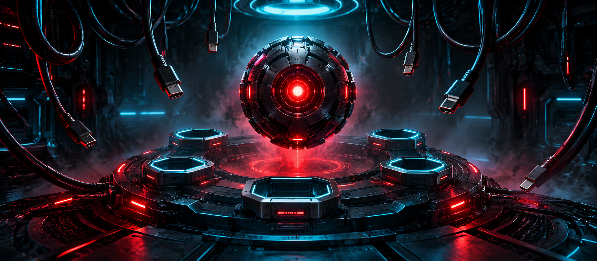

> STATUS: KERN ISOLIERT – 0/6 PORTS VERBUNDEN
MCP – USB für KI
Verbinde die Maschinen. Sprich ihre Sprache.
Ein Sprachmodell ist ein mächtiger Kern, aber ohne Anschlüsse ist es blind und taub. Es kann keine Datenbank lesen, keine Datei öffnen und keine Aktion auslösen. Das Model Context Protocol (MCP) ist der universelle Port, über den sich KI mit Werkzeugen und Daten verbindet. Ganz so, wie USB jedes Gerät an jeden Computer anschließt.
Arbeite dich durch sechs Level. Jedes Level endet mit einem Clearance-Test: Beantworte 5 Fragen in Folge richtig, dann wird der Port verbunden.
Die sechs Level
Warum MCP?
Der Kern ist allein – und das Kabelchaos beginnt.
LVL 1 // SIGNALJSON & JSON-RPC
Bevor Maschinen sich verbinden, brauchen sie eine gemeinsame Sprache.
LVL 2 // HANDSHAKEArchitektur & Verbindungsaufbau
Wer spricht mit wem, über welches Kabel, und wie erkennen sich die Geräte?
LVL 3 // LINKEDTools, Resources, Prompts
Was ein angeschlossenes Modul dem Kern anbieten kann.
LVL 4 // OPERATORDer ganze Ablauf
Von der Frage eines Menschen bis zur fertigen Antwort, und was dabei schiefgehen kann.
LVL 5 // ARCHITECTEntwirf dein eigenes Modul
Jetzt baust du selbst einen Anschluss für den Kern.
SYSTEM ONLINE
Alle sechs Ports sind verbunden. Du hast die Clearance ARCHITECT erreicht.